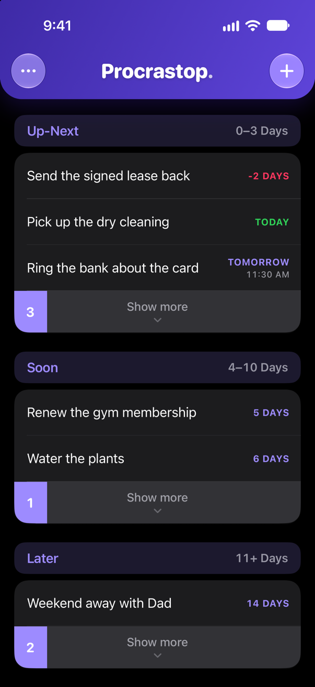
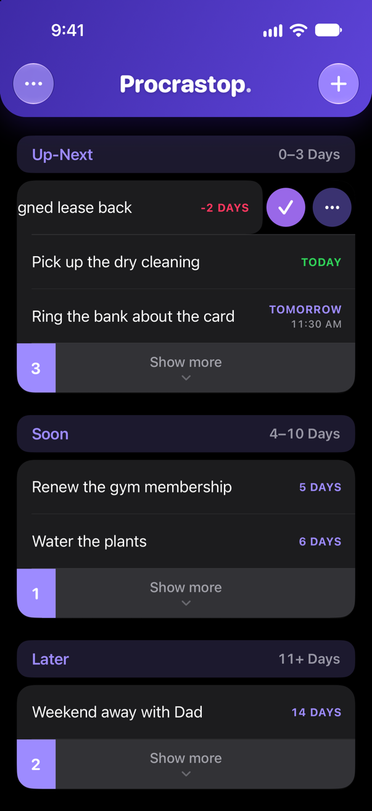
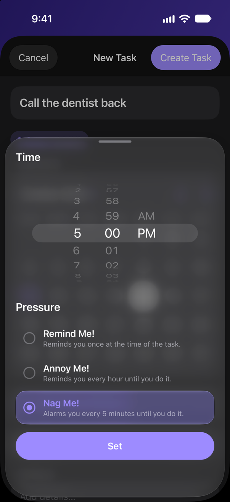

Guide · Version 1.0.0
How to use Procrastop.
Two ideas run the whole app. Every task has a due date, and the date decides where it sits. Every task you give a time to has a level of pressure, and that decides how hard it pushes back.
Procrastop also runs a short tour the first time you open it, and walks the real screens rather than describing them. You can replay it any time from Settings, Retake The Tour.
Step one
Add your first task.
The purple bar at the top is the whole of the app's navigation: the dots on the left open Settings, and the plus on the right adds a task.
Tap + for the full form
- Type what you need to do.
- Pick a day on the calendar. The pill above it shows where the task will land.
- Open Set Time & Pressure if it is due at a particular moment, or skip it if the day is enough.
- Tap Create Task.
Hold + when you are in a hurry
Press and hold the plus instead and you get Flash Add: a title, a row of quick dates, and nothing else to fill in. Use it for the things you would otherwise forget while opening a form.
Your list
Time does the filing.
Up-Next, Soon and Later
Up-Next is what is on you now, Soon is the near future, and Later is everything beyond. Each heading shows the range of days it covers. You never drag a task from one section to another: change its due date and it refiles itself, and as each day turns over the rest of the list moves up on its own.
Reading a row
A row shows the task and how long is left. Today is green, anything overdue is red and keeps counting the days it is late, and the rest count down in purple. A due time sits under the day, and a small page icon means the task has details on it.
Clear Mode
With Clear Mode on, each section keeps only its most urgent tasks on screen and a strip at the end counts what is waiting behind it. Tap the strip, or drag it down, to see the rest. Turn Clear Mode off in Settings to see everything at once.

Day to day
Finish it, or change it.
Swipe a row left
Tapping a row does nothing, on purpose, so a task is never opened by accident while you scroll. Swipe it left instead and two buttons appear: the checkmark finishes the task, and the ellipsis opens it.
Inside a task
Everything you set when you created it can be changed here, including a Repeat for anything that comes back. The footer adds Mark as Done and Delete Task. The two are not the same: a task you finish is kept and can be brought back, while a deleted one is gone for good.
From a reminder
Press and hold a reminder to mark the task done without opening the app. Some reminders also offer to push themselves an hour down the road.

The interesting part
Choose how hard it pushes back.
A task needs nothing more than a day. Give it a time as well and Procrastop asks one extra question, on the Set Time & Pressure sheet: how insistent should this one be?
The three levels
- Remind Me! One reminder, at the time the task is due. Right for almost everything.
- Annoy Me! Keeps coming back until the task is done.
- Nag Me! A real alarm rather than a notification. It sounds at the due time even if your iPhone is on silent, and finishing the task is what stops it.
A task uses one of the three at a time, and a new task starts on Remind Me!, so nothing escalates unless you ask it to. A task with no due time says nothing at all.
Worth knowing
Nag Me! needs its own permission, which the app asks for the moment you first choose it, and it is only offered on iPhones running iOS 26 or later. On earlier versions the sheet shows the other two.
Changed your mind? Open the sheet again and tap Remove Time. The task keeps its day and goes quiet.

Make it yours
Settings, and your copy of everything.
The dots at the top left of the list open Settings. There is not much in there, and nothing in it is required reading.
What you can change
Set where Up-Next ends and where Soon ends under Adjust Timeframes, and your whole list refiles itself around the new ranges. Notifications decides what reaches you and what it sounds like. Appearance, haptics and Clear Mode have switches of their own.
Procrastopped Tasks
Under Task Management. Everything you finish waits here. Tap one to put it back on your list, swipe it left to delete it for good, or use Clear to empty the lot.
Keep a backup
Also under Task Management, Export composes an email to you with a copy of every task attached. You decide whether to send it. Nothing is uploaded and no copy goes anywhere else.
That is the whole app.
Anything still unclear is probably in the FAQ. If something is not working, try Troubleshoot, and if that does not help, write in.